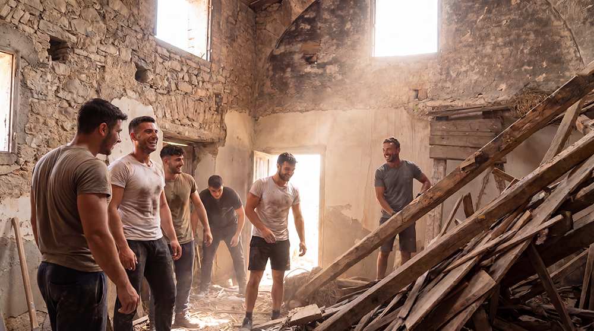
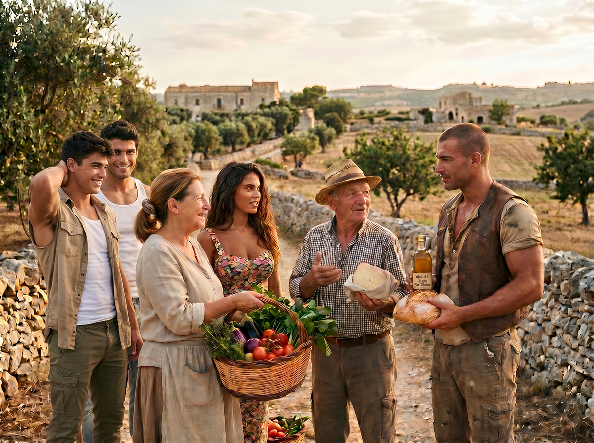
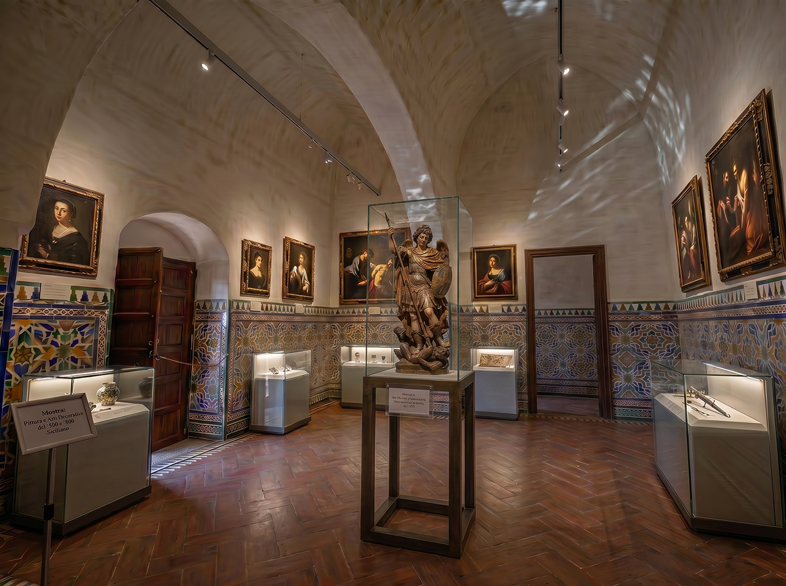

Il progetto del Baglio San Michele non intende coltivare il senso di comunità soltanto al proprio interno, ma aspira a estenderlo in modo vivo e generativo anche all’esterno, integrandosi pienamente nel tessuto sociale, economico e culturale del territorio ragusano.
Questa apertura non è accessoria, bensì costitutiva della sua identità di comunità intenzionale tradizionale radicata nella fede cristiana e nella cultura siciliana: un presidio di normalità che non si chiude in sé stesso, ma coopera al bene comune e alla prosperità dell’intero Ragusano.
Cantieri e maestranze del territorio
Per questo motivo vengono attivamente coltivate e incoraggiate partnership strategiche con imprese, artigiani e associazioni di ogni settore legato alle attività del Baglio. Nella Fase 1 di restauro integrale della masseria fortificata del XVI secolo e nella Fase 2 di costruzione dei venti nuovi immobili rurali in pietra iblea, il restauro e le opere di nuova edificazione saranno affidati esclusivamente a imprese e maestranze professionali esterne. Saranno pertanto essenziali le competenze di imprese edili specializzate in interventi su beni storici, di restauratori accreditati e di un ampio ventaglio di artigiani e tecnici.

Professionisti e imprese coinvolte
Particolare rilievo assumono gli scalpellini esperti nella lavorazione della pietra di Modica e del territorio ibleo, i carpentieri, i fabbri, gli idraulici, gli elettricisti, i piastrellisti, i posatori di pavimenti e rivestimenti, i serramentisti, gli imbianchini specializzati in tecniche tradizionali, gli addetti agli impianti termici e idrici, gli installatori di sistemi di domotica e razionalizzazione energetica, oltre a tutte le altre figure professionali e imprese artigiane operanti nel restauro conservativo e nella costruzione rurale secondo i canoni iblei.
Un elenco così ampio e trasversale di professionalità rende evidente come il progetto del Baglio San Michele sia in grado di suscitare l’interesse e l’adesione di un numero elevato di aziende e artigiani del territorio ragusano, che vi riconoscono un’opportunità concreta di lavoro qualificato, di valorizzazione delle proprie competenze e di crescita economica condivisa.
Filiera corta e relazioni con il territorio

Altrettanto importante è il rapporto con le masserie vicine e con le aziende produttive del Ragusano: si instaureranno proficue relazioni di scambio di beni, servizi e saperi, rafforzando la filiera corta e l’autosufficienza locale in linea con il modello del Sicilian Slow Living.
Formazione, cultura e patrimonio artistico

Trasmissione dei mestieri
Il Baglio San Michele si impegna a promuovere corsi di formazione per la trasmissione intergenerazionale dei mestieri rurali e artigianali, contribuendo a preservare e valorizzare il patrimonio di competenze del territorio.

Valorizzazione del patrimonio artistico
Il Baglio si impegna ad aprire alla comunità attività culturali di qualità e a realizzare un’esposizione permanente di opere d’arte attualmente non musealizzate, contribuendo così alla valorizzazione del patrimonio artistico e identitario del territorio.
In questa prospettiva il Baglio San Michele vuole essere parte viva e attiva del corpo sociale: un luogo che non si limita a offrire residenza stabile a famiglie selezionate, ma che genera relazioni autentiche, opportunità concrete e bellezza condivisa.
Il prezioso contributo delle istituzioni locali, della Camera di Commercio, di CNA e Confartigianato e di tutte le associazioni di categoria sarà fondamentale per rendere concreta, condivisa e duratura questa visione di rigenerazione autentica, in spirito di sussidiarietà e di solidarietà cristiana.